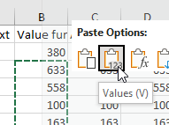

As you no doubt recall from our Access exercise, a database table is made up of fields which are assigned a data type when the table is created. The fields are the columns in the table, and either can only contain the correct data type (i.e. numeric fields can't contain text) or any entry in a field is treated as that data type regardless of what it is (i.e. numbers entered into a text field are treated as text). We also learned in our first couple of weeks of class that the way computers store integer numbers, floating point numbers, text, dates and times are all different, and what we can appropriately do with the data depends on its type - a number stored as ASCII text is a completely different thing from the computer's perspective than a number stored as an integer or a floating point number.
Excel also has data types, but they work differently than in Access. Unlike Access, Excel does not assign data types to columns, and you can freely put whatever data you want anywhere in a worksheet.
Instead, Excel assigns data types to the entries in individual cells, and judges the data type automatically based on what you enter. As long as Excel makes this assignment correctly we do not need to manually set the data type of a cell.
We'll work today with Excel data types that we'll encounter in class. The main distinction is between text and numbers, but additionally we'll learn how Excel handles Boolean data, percentages, dates, and times.Converting between text and numbers
Excel is pretty good at telling the difference between text and numbers, and makes it easy to recover from mistakes. For example, if you make the mistake of entering the units of measure when you enter numeric data (that is, entering 50 g instead of just 50), Excel will treat the cell as text because of the g. But, once you realize your mistake you can delete the g and Excel will convert the entry back to a number automatically.
Once in awhile, though, you may find that values that are meant to be numbers are being treated as text by Excel - this can happen either because of a problem importing a file from another format, or because the cells contain a cell formula or function that produces text output from numeric inputs. Excel will not always automatically convert from text to numbers, and if you try to do math with cells it considers to be text the operation may fail - or, worse, if only some of the cells you're using in a calculation are being treated as text Excel may skip over those and give you the wrong answer with no error message or warning.
We'll start by learning to recognize when numbers are being treated as text, and how to convert back and forth between text and numbers as needed.
A. Open the Excel file you worked with last time, and select sheet "Text to numbers".
In column A you'll find what seems to be numeric data that is currently being treated as text by Excel. The first tipoff that Excel considers these to be text is that the data are left-aligned in the cell, which is the default for text, instead of right aligned, which is the default for numbers. The first lesson, then, is that if you see cells that are misaligned check to see why - if you're expecting all of the cells in a column to be numbers and some are left aligned check that they're actually a numeric data type.
Excel recognizes that these are numbers that are being treated as text, so in each cell it places a little
green triangle in the upper left corner, and if you select a cell it pops up a little warning
message icon - if you click this icon the message is that
the numbers are currently formatted as text.
- if you click this icon the message is that
the numbers are currently formatted as text.
To confirm that this is a problem we'll try to calculate the mean of the data:
- In cell A13 enter the label "Mean of data"
- In cell A14 enter the formula =average(a2:a11)
You'll get an error message (#DIV/0!) because none of these cells contain numbers as far as Excel is concerned. Note that the error is not that you're trying to calculate a mean on text values, since Excel allows you to include some text values as arguments in functions that require numbers - it just skips over the text normally and uses the numbers. The error message is that you're trying to divide by zero, which is mathematically undefined - an average is calculated as the sum of data values divided by the sample size, and if none of the values are numbers the sample size is 0.
The first method to convert these values from text to numbers we'll learn is to use the value() function:
- In cell B1 type "Value function"
- In B2 type =value(a2) - this will convert the cell from text to numeric, and put the result in cell B2.
- Copy and paste this cell to the rest of the cells in column B next to the cells to be converted in column A
Note that when you use this method the cells contain a cell formula instead of a numeric value - since the values in A are no longer needed you might want to get rid of them, but you can't yet because:
- Select cells A1 through A11
- Right-click and select "Delete"
- In the Delete form that pops up select "Shift cells left"
- Click OK
You'll see that you now have #REF! errors in the Value function column (which is now in column A) and in the mean of data cell (A14) because the cell references in the formulas don't work anymore.
To undo this step and get your column A values back:
- Hit CTRL+Z - this key combination is "undo", and undoes the deletion
- Alternatively, hit the Undo button - clicking the button has the same effect as CTRL-Z, but you'll see there is a little down-arrow to the right of the undo, and if you drop that down you will see a list of things you've done so far, and you can undo whichever step you want
You can use CTRL+Z repeatedly, by the way, and it will undo each step that you've done since you started this work session - undo is your friend!
So, if we're going to get rid of column A we need to get rid of the formula in B but keep their values. We can do this with Paste Special:
- Skip B2 and select B3 through B11 (leave B2 as a formula so I can see that you did it right)
- Copy the selected cells (CTRL+C, or right-click and copy)
- Keep B3 through B11 selected, and paste-special the copied cells as values - right-click and select the Values paste option. This will replace the formulas in these cells with their numeric values
- Copy the formula for the mean from A14 and paste it into B14 - you'll see that now Excel considers these to be numbers it can do math on them correctly (even though the first cell is a formula it still works - you can mix formulas that return numbers as values with numeric data without any problems)
B. Second method - the next approach to converting text to numbers is to add 0 to the text values using a cell formula:
- In cell C1 type "Add 0"
- In C2 type =a2 + 0. This will cause Excel to first convert the number in a2 from a text data type to a number, then add 0 to it. The result is the numeric value of cell A2
- Copy and paste this formula to the rest of the cells in C
- Copy all but cell C2 and paste-special as values to replace the formulas with the data values (leave C2 as a formula, please)
- Copy the formula for the mean from B14 and paste it to C14 - you'll get the same mean because both conversion methods produce the same results
C. These first two approaches work fine, but they both enter formulas into the cell instead of entering data, which we then have to copy and paste-special as values.
The third method works without ever using cell formulas - we can use one of the paste special options to do the conversion on the fly with the copied cells.
- In cell D1 type the label "Paste special".
- Select and copy all the data from a2 to a11
- Select cell D2 right-click, select Paste special and then select "Paste special" again

- In the form that pops up select Add as the "Operation"
- Click "OK"
- Copy the formula for the mean from C14 and paste it to D14 - again, you'll get the same value
The "Add" option adds the value of the cells you copied to the cells you are pasting them into - since the cells you are pasting to are all blank, this will have the same effect as adding 0 did in column C. But, this method has the advantage that the pasted cells will be pasted as data values instead of being formulas that then need to be converted to values.
Important warning about this last method - you can only use it if you are pasting into blank cells. If you are pasting over cells that already contain some numeric data the cells you're pasting will be added to the existing cell values that are already there. And, you can't paste over the column of text values, because that will cause Excel to convert the text values to numbers and then add the copied values to them, which will double all the numeric values.
D. The last but not least method is to use the "Convert to Number" option from the error message to do the conversion in place.
- Select A3 through A11 (skip A2 so that it remains a text value)
- Click on the warning message icon in the upper right corner of the selected range
- In the menu that drops down select "Convert to Number"
You should now have numeric values in cells A3 through A11.
Note that you will now have a mean reported in A14 instead of an error message, but it will be different mean than the others because we elected not to convert the contents of A2 - Excel skipped the one text cell (A2) and calculated an average for the numeric cells (A3 through A11). There's no warning or error message in cell A14, so it's important that whatever approach you use to convert text to numbers is applied to every cell.
E. Some formulas produce text as output, even if the inputs are all numeric. These can be tricky, because Excel treats them differently than it does text data values entered directly into cells.
Let's try out an example of a cell formula that produces text from numbers.
- In G1 enter the label "Text from numbers"
- In G2 enter the number 1
- In G3 enter the number 2
- In G4 enter the number 3
- In J2 enter "Concatenated"
- In J3 enter =g2&g3&g4
The ampersand character, &, is the concatenation operator in Excel, which is used to combine values together. This formula appends the three numbers in G2, G3, and G4 to produce 123 as the cell value for J3 - there's no math involved, it just assembles the output from the three input characters.
But, even though 123 is a number, the output of concatenation operations are always treated as text - you can see that the result is left-justified. Unlike the data in column A, however, Excel doesn't warn us that a number is being treated as text when the text is the value from a cell formula.
You can confirm that Excel doesn't consider this to be a number by:
- Select cell J4
- Enter the formula =average(j3)
You'll see that you get a #DIV/0! error like you did before, because you're trying to average a text value.
You can fix the problem by nesting your concatenation formula inside of the value() function - give this a try, and you should get the number 123 right-justified in the cell, and since this is now a number the average in J4 should be calculated as 123 as well.
F. Sometimes you actually do want Excel to treat numbers as text.
For example, student ID numbers at CSUSM are nine digits long, and can have 0's as the first several digits - for example, 002167921. The leading zeros don't change the numeric value - there's no difference in numeric value between 002167921 and 2167921 - but 2167921 is not a nine digit student ID. If you enter 002167921 in Excel it interprets this as a numeric value, and drops the two leading 0's. There would never be a need to do math with student ID numbers, so treating these numbers as text is a better choice - there's nothing wrong with the leading 0's if they are just text characters, and Excel would retain them if entered as text.
Forcing Excel to treat the number as text is done by:
- In cell G7 enter "Leading zeros as a number"
- In cell G8 enter 00215 - you'll see that Excel treats this entry as a number and drops the two leading zeros
- In cell H7 enter "Leading zeros as text"
- In cell H8 enter '00215 (note the apostrophe before the first zero)
The apostrophe causes Excel to treat this as a text label, and retains the leading zeros. The apostrophe is not retained as part of the cell value - it is used just to indicate that the entry is text and is discarded. You'll see that you get Excel's warning message that this is a number entered as text, but this time it's intentional and you can safely ignore the warning.
Boolean data
Boolean data is often called logical data, because its most common use is to make decisions in computer programming. Boolean data can only have the value of 0 or 1, where 0 is interpreted as FALSE, and 1 is interpreted as TRUE. If we make a comparison between two numbers, such as 20 > 22, Excel would return FALSE (with a numeric value of 0) because 20 is not larger than 22. We won't use Booleans until later in the semester, but since they are a different data type supported by Excel we'll learn about them now.
A. Let's try out some Boolean data:
- In cell A16 enter the label "Boolean"
- In cell A17 enter the word true - you'll see it converts to upper case and center-aligns, which is the default for Boolean data types in Excel
- In cell A18 enter the word false - it too converts to upper case and center-aligns
The TRUE and FALSE text labels make it seem as though Excel thinks these are words, but in fact Excel considers them to be numbers. We can confirm this by multiplying each by 100:
- In cell B16 enter "x100"
- In B17 enter a formula to multiply A17 by 100
- Copy the formula to cell B18
Multiplying by 100 results in 100 for TRUE and 0 for FALSE, as we would expect if TRUE is 1 and FALSE is 0.
In contrast, trying to do math with the words TRUE and FALSE does not work:
- In cell D16 enter "Text"
- In cell D17 enter 'TRUE - note the apostrophe before the T...this will cause the entry to be treated as text instead of converting it to a Boolean variable. You'll see this version is left-aligned, like text.
- In cell D18 enter 'FALSE - again, use the apostrophe
- In cell E16 enter the label "x100"
- In cell E17 enter a formula to multiply the text version of TRUE in cell D17 by 100 - you should see an #VALUE! error, which means that you tried to do an operation on data with the wrong type
- Copy and paste E17 to E18 - you should see another #VALUE! error
Some types of operations, and some functions, return Booleans, such as any kind of comparison:
- In cell A20 enter "Comparison"
- In cell A21 enter =1>0 - this will return TRUE
- In cell A22 enter =1<0 - this will return FALSE
Some Excel functions make decisions, and they return a Boolean value:
- In cell B20 enter the label "Logical"
- In cell B21 enter the function =and(1>0, 1<0) - this function evaluates whether the value of the first argument (the comparison 1>0) and the second argument (the comparison 1<0) are both true, and if they are the function returns TRUE, but if either argument is false it returns FALSE. Since 1 is greater than 0, but it is not less than 0, only the first argument is true and this and() function returns FALSE
If you need to enter only the words true or false into a cell you need to use an apostrophe to prevent them from being converted to Boolean data.
Special cases of numeric data - dates and percentages
We will now move on to two special cases of numeric data - percentages, and date/time entries. Both of these data types are converted by Excel from the format you use when you enter them into a numeric form that is stored internally. The numeric form stored by Excel is converted to an appropriate display, which includes text labels (like the names of months) and/or characters (the % in a percentage, and the / in a date).
In other words, the value that Excel records for a cell and the way that value is interpreted and displayed are different things.
Percentages
Switch to the "DateTimePercentage" sheet - we will use it for the sections on percentages, dates, and times.
Percentages are stored by Excel as proportions - 100% is stored as 1, 50% is stored as 0.5, and so on.
Any number entered can be displayed as a percentage by setting its display type, using the number format
drop-down, like this , - by
default the display type of a number or text cell is set to "General", but dropping the menu down and selecting
"Percentage" will cause any selected numeric cell to be multiplied by 100 and have a % sign added to the end.
, - by
default the display type of a number or text cell is set to "General", but dropping the menu down and selecting
"Percentage" will cause any selected numeric cell to be multiplied by 100 and have a % sign added to the end.
Try this out:
- In cell A1 enter the label "Enter 0.5, set display type to Percentage".
- In A2 enter the value 0.5
- Drop the display type menu down and select "Percentage". You should see your entry of 0.5 is now displayed as 50.00%.
Changing the display type on data that are already in the worksheet does not change the data values, it only changes the way that Excel interprets and displays the cell contents.
You can enter data as percents rather than proportions by using a % sign after the number. When you enter new data values as percents, Excel converts the number to a proportion (divides the numeric value by 100) and sets the cell's display type to Percentage.
Try this out:
- Enter the label "Entering 50%" into cell A4
- In A5 enter 50% (with the percent sign)
You will see:
- The entry shows as 50%
- The display type for the cell was automatically changed to "Percentage"
- The value stored is 0.5 - to see this manually set the display type to "General" number format, which shows the number actually stored in the cell. You will see that the number actually recorded by Excel is 0.5.
- Set the display back to "Percentage" before you go on
Entering data as a percent, with a % after the number, changes the data value (by dividing it by 100) and changes the display type to Percentage.
The display type doesn't exclusively affect the display of the number entered - if you are entering percentages you can set the display type to Percentage for the empty cells you will be use first, and then you can enter only the percentage number without the % sign. With the display type set to percentage Excel will assume that numbers entered are meant to be percents, and it will do the same conversion as if you had actually entered the percent sign.
Try this out:
- Enter the label "Setting Display to Percentage, entering 50" in cell A7
- Select A8 and set the (empty) cell's display type to Percentage
- Enter the number 50 (without the %) into cell A8. You'll see that Excel interprets this as an entry of 50%, even though you didn't use the percent sign
- Confirm that it converted the 50 you entered to 0.5 for storage by setting the display type to General, then set it back to Percentage
Setting the display type to percentage first and then entering the percent number has the same effect as
using a % sign after the percent number - the percent number is divided by 100 for storage, but is displayed
as a percentage.
What you don't want to do is mix these approaches - for example, entering the value 50 and then setting the display type to Percentage does not work. To see the problem:
- Enter the label "Entering 50, setting display to percentage" in cell A10
- Enter the number 50 in cell A11
- Select cell A11, set its display type to Percentage - you'll see the value is listed as 5000%, which is 50 multiplied by 100, rather than the 50% we wanted to enter
Entering a percent number first, then setting the display type to percent, does not change the data value,
but it displays the percent value incorrectly.
Dates
Excel stores dates as the number of days that have elapsed since the epoch of 1/0/1900 (the zeroeth of January, 1900). For example, the first of January 2023 is the number 44927, which means that 44,927 days elapsed between 1/0/1900 and 1/1/2023.
Note that Excel cannot store dates earlier than 1/0/1900 as dates. And yes, this is a weird limitation - MS Access can store dates starting from 1/1/100, and it uses negative numbers for dates before 1/0/1900. Both can store dates up to 1/1/9999.
What happens if you enter a date that's earlier than 1/1/1900? Excel will accept them, but it will store them as text instead of numbers. Any date can be stored as text, but then some of the conveniences of a numeric representation are lost - for example, calculating the number of days between two dates is not possible if the dates are stored as text.
With that background, let's explore how dates that are between 1/0/1900 and 1/1/9999 work...
A. Continuing in the worksheet "DateTimePercentage":
- In cell F1 type "Dates"
- In cell E2 enter "Today's date"
- In cell F2 type =today(). This function takes no arguments, and will insert today's date into the cell
- In cell E3 type "First day of 2023"
- In cell F3 type 1/1/23
We learned to use a slash, /, to denote division earlier, but the slash is only interpreted that way if it's part of a cell formula. Since there is no = sign in front of this entry the slashes are interpreted as part of a date instead of as division operators.
Since Excel (correctly) interpreted 1/1/23 as a date it converts your input to its internal date format, and displays the cell contents as 1/1/2023. You can tell that Excel understood that you meant to enter a date because it made a change in what you actually entered - notice that the 20 in 2023 wasn't there in your original entry, but Excel knew this was a date and added it.
Notice that Excel assumes you wanted the current century and millennium in your date - for example, if you wanted 1/1/1923 you would need to type the whole year.
To confirm that these are stored as numbers:
- Select cells F2 and F3
- Change their display type to General - you'll see that 1/1/23 has the value of 44927, and today's date is later (depending on when you do this part of the exercise - if you're working on March 2, 2023 the number is 44987)
- Set the display types back to Short Date before moving on.
B. Because the dates are stored as numbers, we can do math with them:
- Enter "Days since first" in cell E4
- Enter =F2-F3 in cell F4 - this calculates how many days have passed between Jan 1 and today (if you see a date instead of an integer number, you can change the display format for cell F4 to "General")
By default, if we only enter a date, or use a function like today(), we enter a date as a whole number, with no decimal. It's possible to include both date and time in a single entry by using the decimals to represent time - we'll look at that next.
Combined date and time entries
Times are represented as fractions of the 24 hour day. Noon is halfway through the day, so noon is represented
by the number 0.5. At 6 pm we are 3/4 of the way through the day, so 6:00 pm is the number 0.75.
Since dates are whole numbers of days since an epoch and times are fractions of a day they can be stored together as a single number. If we wanted to enter the date and time for the start of class today we would:
- Enter "Start of class" in cell E6
- We started class today at 1:00 PM sharp, so in cell F6 enter 3/2/23 1:00 PM (make sure you have a space between 1:00 and PM or it won't work right) - you'll see the cell value now displays as 3/2/2023 13:00 in the spreadsheet, and 3/2/2023 1:00:00 PM in the formula bar
- Change the display type to General to see the number used to represent the day and time - you should see 44987.54167. The whole number is the date, and the decimal number is the time of day.
- To get back to a display type that shows both date and time drop down the display type selector, and choose "More number formats"
- Select Date from the Category box
- Scroll down in the Type box until you find the type that reads "3/14/12 13:30" and select it
- Click "OK"
Entering dates without times
Note that when we entered dates with no times we don't have the option of recording the dates as integer numbers, since Excel doesn't have an integer data type. Since all numbers are entered as floating point values they always have decimals, even if Excel doesn't show them. The decimal value for a date without a time is 0, which Excel interprets as midnight, or 12:00 AM.
This isn't ideal - a date with 0 as its decimal value could either be a date that was entered with no time, or it could be a date that was entered with midnight as its time. It would be better if a missing time entry was treated as no data, but because of the way times are represented this isn't the case in Excel.
Times
Let's see what we can do with times now.
A. We can use a function to report the current time in a cell:
- Label I1 (this column reference is upper case i) "Time"
- Label cell H2 "Current time"
- Entering the function =now() in cell I2 - this will place the current date and time in that cell
- Set the display type to Time
Since this is a function it will update every time you enter a new value or manually re-calculate the worksheet (which you can do by hitting the F9 key).
Note that if you want to use now() to time stamp an entry you would need to copy and paste-special the value - if you were to do this the time at the last recalculation would be used - copying and pasting the value would not prompt a recalculation.
B. The now() function includes both date and time, but you can enter times alone. To do this:
- Enter the label "Enter a time" in cell H3
- Enter 12:00 in cell I3
You'll see that 12:00 is recognized by Excel as 12:00:00 PM - the colon in the time tells Excel that this is a time of day, Just like the slash (/) indicated we were entering a date. You can enter times using the 24-hour clock, where 13:00 is 1 pm, or you can use am and pm instead - in cell I3 enter 1 pm and you'll see that Excel correctly interprets this as 13:00 (in the worksheet) or 1:00:00 PM (in the formula bar).
Times without dates
Since you didn't enter a date, Excel assigns a 0 for the number of days since the epoch - you can see this by changing the format of I3 to General, which will show you a value of 0.54167 in the cell. As far as Excel is concerned this number represents 1:00 pm on 1/0/1900.
C. We can do math on times as well as dates.
- In cell H4 enter the label "Time since start of class"
- In cell I4 enter =I2 - F6 - this subtracts the start of class time in cell F6 from the time now in I2
- Set the display type of I4 to General to see the number - this is the difference between now and the start of class, as a fraction of a day.
To convert the number in I4 to seconds we need to multiply this fraction of a day by the number of seconds in a day. There are 60 seconds in a minute, 60 minutes in an hour, and 24 hours in a day, so the number of seconds in a day is 60*60*24.
In cell H5 write the label "Seconds since start of class", and in cell I5 enter:
= i4*60*60*24
Hit F9 to get the now() function to update, which will update the seconds since the start of class as well.
Entering date and time data in Excel - some advice
If you were collecting data on both dates and times, how should you enter them in Excel? Since Excel treats date and time as part of a single number, it is tempting to enter date and time together in the same cell. For example, if you wanted to enter an observation that was made on 1/1/2016 at 1:12 PM, you could enter this as:
1/1/16 1:12 PM
and Excel would convert it to the number 42370.55 internally, and format it for display as 1/1/2016 13:12.
This is compact, but we often want to work with dates and times separately - if we wanted to find all the entries from between 10 AM and 2 PM we wouldn't care what date they were recorded, and having the date as part of the entries would make it harder to filter the times we want.
Given this, consider entering dates and times as two separate columns. Entering the date as:
1/1/16
and the time as:
1:12 PM
will give you a number of 42370.0 in the Date column, and a number of 0.55 in the Time column. This makes them easy to use as two separate pieces of information, and we could easily combine them by adding them together - 42370.0 + 0.55 = 42370.55, which Excel interprets as 1/1/2016 13:12.
If you are working with dates that fall outside of the range that Excel can handle, you can further record year, month, and day in separate cells. Calculating the number of days between two dates would not work, since in this form Excel would not know how to handle differences in numbers of days in each month or leap years, but it would be possible to calculate differences between years, and to sort chronologically.
Sneaky data type errors
Keep an eye out for Excel's data type mistakes, they can sneak up on you.
Say, for example, that you are entering names of genes into Excel, and you come to the gene that encodes the "deleted in esophageal cancer 1" protein, which is abbreviated as DEC1.
- Enter "Data type error" into E8
- Enter DEC1 into cell F8 - we intend for this to be the name of a gene, but you'll see that Excel helpfully converts the label DEC1 into the date 12/1/23
You can use the apostrophe trick to prevent Excel from interpreting DEC1 as a date, and enter it as a text label instead:
- In cell E9 enter "Error prevented"
- In cell F9 enter 'DEC1 (note the apostrophe), and you'll see the conversion to date is prevented.
This is fine if you're entering the labels by hand, but the same thing can happen when importing data into Excel, and those errors can be much harder to spot.
A potential source of trouble: importing data
Sometimes you will be generating data from an online database, or in another desktop program, and will want to import the data into Excel for analysis. Depending on the format of the file, you may find that Excel interprets things differently than you want it to, and the fact that data types are assigned at the level of the cell means that a cell in the middle of a column of gene names may suddenly get interpreted as a date.
3.31%, 0.0331, 3.31, 42736, 1/1/17, ABCC6
52.45%, 0.5245, 52.45, 42737, 1/2/17, DCTD
68.46%, 0.6846, 68.46, 42738, 1/3/17, DEC1
62.78%, 0.6278, 62.78, 42739, 1/4/17, TLR6
19.65%, 0.1965, 19.65, 42740, 1/5/17, CCNG2
Consider the example of a "comma separated values" (CSV) formatted text file, in the box to the left. CSV is a popular ASCII-based format that uses commas to separate columns in a data file.
You'll see that some of the entries are formatted in the CSV file in a way that will guide Excel's data type decisions - using a % sign at the end of the Percent column entries will cause Excel to correctly interpret these as percentages. Likewise, the slashes in the Date column will cause Excel to interpret these correctly as dates.
The other strategy is to take the data type decision away from Excel entirely - formatting the percentages as a proportion and dates as their numeric equivalents will cause Excel to import them as numbers without any conversion, and we can set the display types ourselves after the data have been imported.
But, we will have issues with the Percent Number column - Excel will interpret these as they appear in the CSV file with no translation, and setting them to Percentage display types will cause them to be multiplied by 100 for display. We are better off with the Percent or Proportion options than with Percent Number.
At least with Percent Number the problem would apply to the entire column, so we would probably notice the issue and could fix it by dividing each value by 100 after we've finished the import to convert them to Excel's percentage format.
The gene names are the trickiest case - let's see what happens when we open the file, and what we can do to fix the issue.
1. Download this file, then use "File → Open" to find the file and open it (it's called "format_challenges.csv").
You'll see that Excel interpreted the Percent column as percent (but not Proportion or Percent Number), interpreted Date as dates (but not Date number), and it decided that we meant for DEC1 to be a date, even though it is embedded in a column full of text. Since Excel doesn't assign data types at the level of a column it didn't assume that just because every entry before and after DEC1 was text that DEC1 should be text as well.
Close the file but don't save the changes (Excel will write the incorrectly interpreted date over the actual gene name if you save).
2. We can prevent this interpretation problem if we import the CSV file as an external data set - this will cause Excel to run the file through its "Text Import Wizard", which assigns a data type to columns in a data file and prevents this error.
Switch back to your ex4_data spreadsheet if necessary (any worksheet within it will do), and select the "Data" tab. The left-most block of buttons are labeled "Get & Transform Data", and one of the buttons is labeled "From Text/CSV" - click on this button, then do the following:
- Find the file "format_challenges.csv", and select it in the "Import Text File" window. Click "Import".
- You will now be presented with an import window
- Make sure "Comma" is selected as the Delimiter since our columns are separated by commas in the CSV file format
- You'll see that the data type is guessed based on what the columns overall contain, and the single DEC1 entry doesn't prevent the column from being correctly interpreted as text, because all the other entries are clearly text
- Click "Load" to import the data into a new worksheet
When you finish the import, you'll see that you now have a correctly formatted DEC1.
The take-home message of this section of the exercise is that Excel does have data types. When you enter data into a cell Excel decides the data type it thinks you want, and will actually change what you enter into the internal representation it uses for that data type, and then change the display type to show you what it thinks you meant to enter. This is fine most of the time, but there are cases in which what you wanted to enter and what Excel thinks you wanted to enter are different, and you need to be aware of these cases so you can avoid having Excel introduce errors into your data.
Optional: time of day as a circular variable
Unless you are an ecologist you may not use direction data much. But time of day is also a circular variable, and regardless of the branch of biology that interests you there is a good chance you'll work with time of day data. Now that you know how time is recorded in Excel you can better understand how to work with time as a circular variable. This exercise is getting a little long, so this part will be optional - if you're interested read on.
Imagine we have times that four babies were delivered one night in a hospital equal to 11:15 pm, 11:59 pm, 12:30 am, and 1:15 am. If we want to know what the average time they were born is, how would we proceed?
Time of day is a circular variable like direction, but it has the added complication that the units are in hours and minutes, rather than in degrees (or radians). We will need to use the same trick of converting times to x and y components, but we will first have to figure out a way to convert time into radians.
We can visualize the problem more easily by expressing the times on a 24 hour clock, with the birth times at 23:15, 23:59, 00:30, and 1:15. On a 24 hour clock it's clear that time is a circular variable, and that these birth times cluster around midnight, with two birth times before midnight and two after. Just like we had with the direction data, we have a circular variable with values that are distributed on either side of the point at which the numbers reach their maximum and start over.
If you took a simple average of the birth times, the babies born before midnight and after midnight will produce an average time around 12:00 - as before, very wrong.
What to do?
1. First, we need to enter the data. Switch back to the Nesting Functions tab and enter the label "Birth time" in cell I1, and then in cells I2 through I5 enter the birth times. Use the 24 hour clock, and make sure you enter the time for half past midnight (12:30 am) as 00:30 rather than 24:30.
The reason this matters, even though 00:30 and 24:30 are both half past midnight, 24:30 is interpreted as occurring the next day. Entering 00:30 assigns a day of 0, but 24:30 assigns a day of 1, which makes the values numerically different. The calculation methods assume that the date is 0 for all of the times, so we need to enter the data in a way that keeps it that way.
Once you have the times entered, you can see that Excel interpreted them correctly as times by checking the formula bar - they will display as a time with an AM or PM as appropriate (even though you didn't enter them with AM or PM).
If you switch to the Home tab and set the number format to General, you'll see that the times are all displayed as proportions of the 24 hours in a day. The times that are just before midnight are over 0.95, and the ones that are just after midnight are less than 0.1.
We'll calculate the average incorrectly first, as we did for directions, so you can see that all this effort is needed to avoid a mistake - in cell I10 type "Simple average", an in I11 type =average(i2:i5). Set the format to "Time", and you'll see that the simple average tells us the babies were born about 14 minutes after noon, which is exactly wrong.
2. Now to do it right - we'll calculate the sin's first. The time numbers are already proportions of a 24 hour day, and 24 hours of time elapsing is equivalent to 2π radians. To convert time to radians we just need to multiply the time by 2π.
Enter "Sin time" in J1, and in J2 enter the formula =sin(i2*2*pi()). The calculation within the sin() functions parentheses is doing our unit conversion from hours to radians, and then is passing the converted value to the sin() function to produce the answer. Copy and paste J2 into the rest of the rows to get sin's for the rest of the times.
Calculate the average of sin's in cell J7.
3. Calculate the cos's next. Enter "Cos time" in K1, and then calculate the cos of time for the first birth time in K2 (use the same conversion, but this time nest it inside of the cos() function).
Calculate the average of the cos's in cell K7.
4. To get the correct average, enter "Correct average" in cell J10, and =atan(j7/k7) into J11, which will give you a value of 0.064341. Since both the sin and cos averages were positive we don't need to add anything to the result to get the right answer.
So, this is the correct average for the times, but it's in radians instead of time. To see what time of day this is equivalent to we need to convert the radians into a proportion of 2π, and then set the display type to show the proportion as a time. In cell J11 edit the formula to be =atan(j7/k7)/(2*pi()) , which divides the mean time in radians by the radians in 24 hours, and gives the proportion of the total equal to 0.01024. If you now set the display type to Time the proportion displays as 12:14:45 AM, 14 minutes and 45 seconds after midnight, right where it should be.

Assignment
That's it! Save your worksheet and upload it to the course web site.